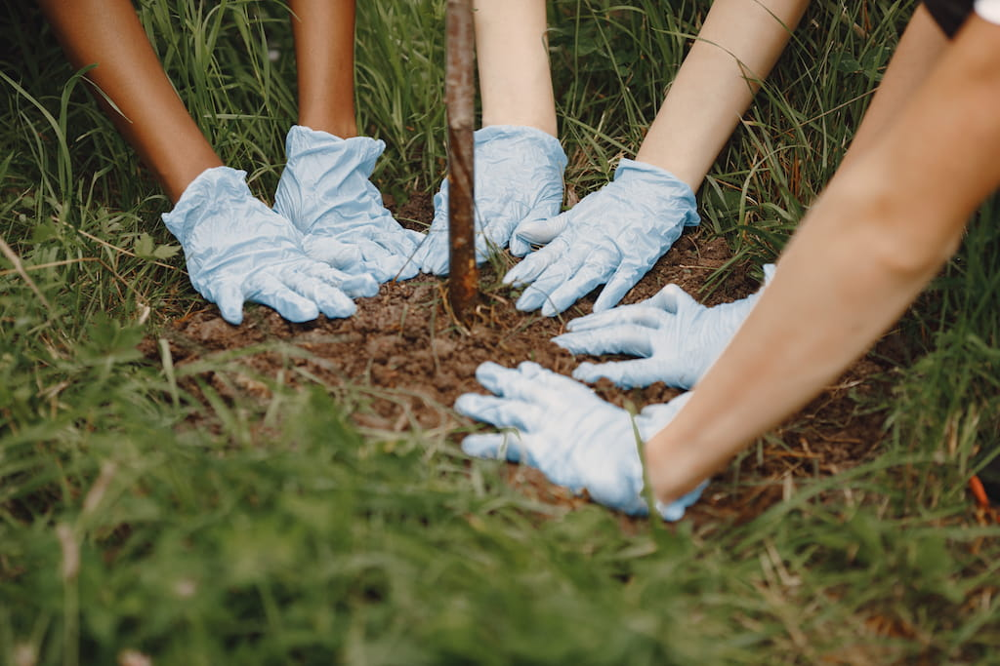
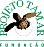

Contribua com o Plantaê
Junte-se a nós na construção de um futuro mais sustentável. Sua participação faz a diferença, seja compartilhando conhecimento, apoiando ações locais ou ajudando instituições parceiras.

Formas de ajudar
Existem diversas maneiras de fazer parte desta transformação. Escolha a que mais combina com você e comece hoje mesmo.
Compartilhar conhecimento
Contribua com tutoriais, artigos e dicas sobre sustentabilidade para ajudar mais pessoas a fazerem escolhas conscientes.
Quero saber mais→Participar de ações locais
Junte-se a iniciativas sustentáveis na sua região ou crie novas ações para mobilizar sua comunidade.
Quero saber mais→Apoiar instituições parceiras
Conheça e apoie ONGs e projetos que trabalham pela preservação ambiental e desenvolvimento sustentável.
Quero saber mais→Enviar sugestões e feedback
Suas ideias são importantes! Ajude a melhorar o Plantaê compartilhando sugestões e experiências..
Quero saber mais→Conecte-se com o Plantaê
Veja como sua contribuição impacta diretamente as principais funcionalidades da plataforma.
Árvore interativa
Suas contribuições fazem sua árvore crescer no site, desbloqueando conquistas e níveis.
Ganha pontos
Gamificação
Tutoriais e artigos
Seu conhecimento compartilhado alimenta o Guia Verde e ajuda milhares de pessoas.
Ajuda a comunidade
Painel de hábitos
Suas ações se refletem nas métricas e inspiram outros a adotarem práticas sustentáveis.
Impacto direto
Mapa Verde
Adicione locais, ONGs e pontos de coleta ao mapa colaborativo da sua região.
Ajuda a comunidade
Impacto direto
Instituições que você pode apoiar
Conheça organizações que fazem a diferença na proteção do meio ambiente.
WWF-Brasil
Reflorestamento
Atuação na conservação da natureza em todos os biomas brasileiros, com projetos de reflorestamento, proteção da fauna e educação ambiental.
Conhecer instituição
Greenpeace Brasil
Preservação
Rede de ativistas que denuncia crimes ambientais e defende florestas, oceanos e biodiversidade, pressionando governos e empresas por políticas mais justas.
Conhecer instituição
Fundação SOS Mata Atlântica
Mata Atlântica
ONG brasileira que monitora o desmatamento e promove a restauração da Mata Atlântica, além de educação ambiental e defesa de políticas públicas.
Conhecer instituição

Projeto Tamar
Fauna Marinha
Programa de conservação marinha dedicado à proteção das tartarugas-marinhas ameaçadas, unindo pesquisa, educação e inclusão social em comunidades costeiras.
Conhecer instituição
Cidades Sem Fome
Agricultura Urbana
ONG que implanta hortas urbanas e escolares em áreas periféricas, gerando renda, combatendo a insegurança alimentar e incentivando agricultura sustentável.
Conhecer instituição
Instituto Trata Brasil
Recursos Hídricos
OSCIP focada em saneamento básico, lutando para ampliar o acesso à água tratada e ao esgoto adequado e proteger rios e mananciais no Brasil.
Conhecer instituição
Instituto Lixo Zero Brasil
Gestão de resíduos
Representante da Zero Waste International Alliance no Brasil, mobiliza cidades, empresas e comunidades para reduzir resíduos e fortalecer a economia circular.
Conhecer instituição
Instituto Terra
Restauração Florestal
Trabalha na recuperação de áreas degradadas de Mata Atlântica no Vale do Rio Doce, unindo reflorestamento, educação ambiental e desenvolvimento sustentável.
Conhecer instituição
Dúvidas rápidas
Respostas para as perguntas mais comuns sobre contribuição
Como eu posso começar a contribuir?
Caso você tenha se identificado com alguma ONG você pode conhecer ela melhor e contribuir de maneira financeira ou com seu tempo.
Preciso pagar para contribuir?
Não, existe diversas formas para contribuir sem ser financeiramente, você pode fazer ações voluntarias e usar a plataforma para desenvolver bons hábitos.
Ganho algo ao contribuir?
Financeiramente não pois não é um trabalho remunerado ou investimento. Mas contribuir com o projeto e/ou ONG's além de satisfação pessoal você contribui com uma sociedade melhor.
Como meus dados são utilizados?
Coletamos sua localização atual estritamente para encontrar pontos de coleta perto de você (essa funcionalidade funciona apenas se você permitir acessar sua localização atual). Seus dados são mantidos em segurança e utilizados apenas para este fim.